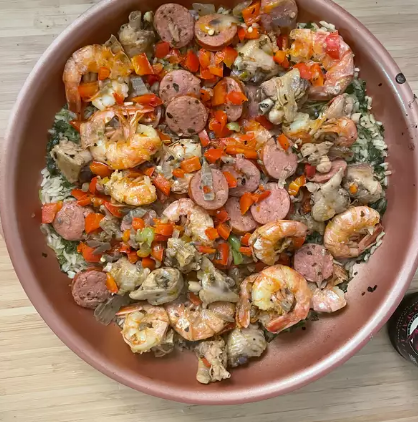

Paella

Description
Paella is a classic Spanish one-pan dish featuring saffron rice with
chorizo, chicken, and seafood. This easy recipe marinades the chicken
in paprika and oregano for added flavor, and adds the shrimp at the last
minute for fantastic results.
Ingredients
- chicken
- chorizo
- shrimp
- rice
- vegetables
- chicken stock
- spices
- Allow the chicken to marinate in olive oil, paprika, oregano, salt,
and pepper in the fridge for a few hours (or overnight).
- Heat olive oil in a paella pan and stir in garlic, red pepper flakes,
and rice. Add saffron, bay leaf, parsley, chicken stock, and lemon
zest. Simmer rice for 20 minutes.
-
Cook chicken, onion, bell pepper, chorizo, and shrimp until done.
Then add to the rice mixture.